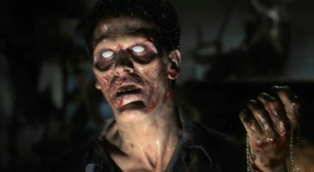

The Beginning Of Ash's Journey
The Evil Dead (1981)

Ash and his friends travel towards the isolated Knowby cabin.
The Journey To The Cabin
Before becoming the legendary Deadite fighter, Ash Williams was simply travelling with his girlfriend Linda and his friends Cheryl, Scotty and Shelly to a remote cabin hidden deep within the Tennessee woods.
The group expected a quiet holiday, unaware that the cabin contained a dark secret. Years earlier, Professor Raymond Knowby had discovered the ancient Necronomicon Ex Mortis while studying forgotten languages and supernatural forces.
Inside the cabin, Ash and his friends discovered Knowby's recordings. When passages from the Book of the Dead were played aloud, an ancient Kandarian evil was awakened.

The Necronomicon Ex Mortis awakens the forces of darkness.
The Awakening Of The Kandarian Evil
The force unleashed from the Necronomicon was capable of possessing the living and transforming them into Deadites.
The cabin became a place of terror as Ash watched his friends fall one by one. Cheryl, Shelly and Scotty were consumed by the evil, leaving Ash isolated and fighting for survival.
The man who entered the woods expecting a normal weekend was now trapped in a battle against an ancient supernatural force.

Ash is forced to confront the Deadites, including the woman he loves.
The Loss Of Linda
As the Kandarian evil spreads through the cabin, Ash suffers his greatest personal loss. Linda, his girlfriend, becomes one of the victims of the darkness unleashed by the Necronomicon.
After being possessed, Linda returns as a Deadite. Ash is forced to fight against someone who was once his closest companion, proving that the evil does not simply attack the body — it attacks everything a person cares about.
The death of Linda becomes one of the defining moments of Ash's transformation. He is no longer simply trying to escape the cabin; he is fighting against an ancient force that has taken everything from him.

Ash destroys the Necronomicon Ex Mortis, believing the nightmare has ended.
The Destruction Of The Necronomicon
With the cabin consumed by evil and his friends gone, Ash discovers that the only way to end the nightmare is to destroy the source of the darkness.
He throws the Necronomicon Ex Mortis into the fire, believing that the Book of the Dead has finally been defeated.
However, destroying the book does not end the battle. The Kandarian force that was awakened remains, and the evil connected to the cabin refuses to let Ash go.
As Ash stands outside the cabin, the unseen force rushes towards him, beginning the next chapter of his story.

Ash's final moments from Evil Dead lead directly into Evil Dead 2.
The Evil Dead Continue
The opening of Evil Dead 2 briefly recaps Ash's first encounter with the Evil Dead. The story then continues from the exact moment where the first film ended.
The Necronomicon Ex Mortis itself has already been destroyed. The events that follow are not the discovery of another complete book, but the continuation of the same supernatural force that was unleashed at the cabin.
The Kandarian evil attacks Ash, throwing him through the woods and leaving him once again trapped in the nightmare he thought he had survived.

Ash becomes a victim of the same darkness he has been fighting.
Ash's Temporary Possession
After being attacked by the Kandarian force, Ash is temporarily possessed by the evil surrounding the cabin.
The same darkness that claimed his friends attempts to consume him, but Ash manages to resist and return to himself.
This becomes an important turning point in Ash's journey. Unlike those who were destroyed by the Deadites, Ash is able to survive the possession and continue fighting.
The survivor of the first nightmare is beginning to become something more than an ordinary man.

The evil continues to test Ash's strength.
The Battle Continues
Ash remains trapped at the cabin, surrounded by the same supernatural forces that changed his life forever.
The Kandarian evil attempts to break him through fear, isolation and memories of everything he has lost.
But Ash is no longer the frightened man who first arrived at the cabin. Every battle has hardened him, preparing him for the destiny that awaits.

Linda returns as one of Ash's most haunting encounters with the Evil Dead.
The Return Of Linda
The Kandarian evil continues to torment Ash by bringing back the horrors of his past. Linda returns as a Deadite, forcing Ash to confront the loss he suffered during his first encounter.
The evil uses the memory of Linda against him, showing that the Deadites do not simply attack through physical violence — they use fear and emotional pain as weapons.
Her return leads to one of the most unforgettable moments in Ash's battle against the Evil Dead, as her possessed body continues moving in a terrifying and unnatural display.

Linda's Deadite form becomes one of Ash's most memorable battles.
The Headless Dance Of Linda
The evil surrounding the cabin continues to torment Ash by using Linda's corpse as a weapon against him. Even after death, the darkness refuses to let him escape the memories of what happened during his first encounter.
The possessed body of Linda rises and performs a bizarre and horrifying dance before continuing the attack against Ash. The moment becomes one of the most iconic examples of the strange mixture of horror and dark humour that defines Evil Dead 2.
Ash is forced to accept that the past cannot be restored. The people he loved are gone, and the only way forward is to continue fighting the evil that destroyed them.

Ash creates the weapon that would become a symbol of his legend.
The Birth Of The Chainsaw Hand
The battle against the Evil Dead takes another devastating turn when Ash's own hand becomes possessed by the Kandarian evil.
The possessed hand attacks Ash, leaving him with no choice but to remove it before the darkness can take control completely.
What begins as an act of survival becomes the creation of Ash's most famous weapon. He replaces his lost hand with a chainsaw, transforming his injury into a symbol of defiance against the Deadites.
This is the moment where Ash's transformation is complete. He is no longer only a survivor trying to escape the nightmare. He is becoming the warrior capable of fighting back.

Annie Knowby arrives carrying her father's research and the missing pages.
Annie Knowby And The Missing Pages
Ash's battle changes when Annie Knowby arrives at the cabin. Annie, the daughter of Professor Raymond Knowby, brings her father's research and the missing pages connected to the Necronomicon Ex Mortis.
The original Book of the Dead that Ash destroyed at the end of the first encounter is not restored. The surviving pages contain important knowledge about the ancient forces connected to the Deadites.
Through Annie's translations, Ash begins to understand that the events at the cabin are part of something far older and more powerful than he imagined.
The battle is no longer simply about surviving the night. Ash is becoming connected to an ancient conflict between humanity and the forces of darkness.

Henrietta Knowby becomes another Deadite threat within the cabin.
Henrietta Knowby
The arrival of Annie's research reveals more about Professor Knowby's experiments and the dangers surrounding the Necronomicon.
Henrietta Knowby, who was transformed into a Deadite through Professor Knowby's work, becomes another horrifying reminder of the power connected to the Book of the Dead.
Ash is forced to face another supernatural creature created by the darkness surrounding the cabin, proving that the evil unleashed years earlier is still growing stronger.

The prophecy of the hero from the sky begins to reveal Ash's destiny.
The Hero From The Sky
The knowledge contained within the missing pages reveals that Ash's journey is connected to an ancient prophecy.
The writings speak of a hero who will arrive from the sky and stand against the forces of darkness. Ash does not see himself as a chosen warrior, but his actions have repeatedly proven that he is capable of resisting the Evil Dead.
Every loss and every battle has shaped Ash into the person the prophecy described.
Ash is taken away from his own time and toward his ultimate destiny.
The Time Vortex
After the final battle at the cabin, the forces surrounding the Necronomicon create a powerful portal.
Ash is pulled through the vortex and transported away from his own era, beginning the next stage of his journey.
The man who once only wanted to escape a nightmare is now connected to an ancient battle stretching across history.
The Legend Of El Jefe
Ash Williams' journey is the transformation of an ordinary man into a legendary warrior.
He never asked for the responsibility placed upon him, but every encounter with the Evil Dead pushed him closer to fulfilling the destiny written within the ancient prophecies.
From the Knowby cabin to forgotten kingdoms, Ash became the one person capable of standing against the Deadites.
The reluctant survivor became the hero from the sky. The man with the chainsaw hand became the legend known as El Jefe.
Wherever the Evil Dead rise, Ash Williams will be there to face them.